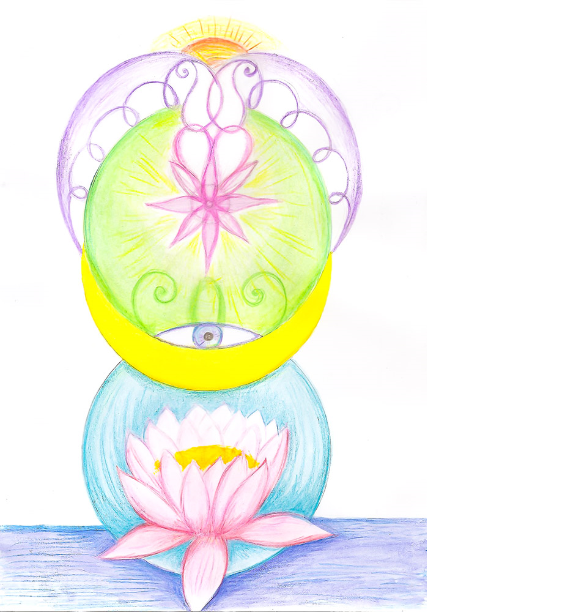

Итоги Всемирного сеанса по Фазовому портрету "Материнство" 2012-2013
31.12.2012 г. научный руководитель Международной Школы Альтернативной Психологии профессор, доктор медико-биологических наук Ибадов Яшар Садай оглы провел Всемирный интерактивный сеанс работы по Фазовому портрету "Материнство" с целью помощи материнским энергиям Земли и энерго-информационной коррекции состояния участников сеанса и человечества в целом в момент фазового перехода 2012 - 2013 г.
В сеансе участвовали 169 человек из России (Волгоград и Волгоградская область, Москва, Санкт-Петербург, Воронеж, Мурманск, Орск, Коломна, Иваново, Новосибирск, Калининград, Новокузнецк), а также жители Италии, Украины, Азербайджана. Участники вошли в работу с конкретными пожеланиями: личностными (здоровья и счастья), для коллектива и семьи (гармонии, взаимопонимания), для дома, района, города, разных стран и народов, всей планеты.
Можно определить несколько категорий участников: дети; влюблённые, мечтающие пожениться; молодые женщины, желающие стать матерями; матери с пожеланиями здоровья своим детям и детям всей планеты; отцы с пожеланиями реализации в работе; пожилые люди с пожеланиями укрепления здоровья и душевного комфорта. Несколько человек находились в гостях в другой стране и в другом городе, и во время сеанса желали своему городу процветания. Сотрудники центров Международной Школы Альтернативной Психологии выступили с пожеланием новых научных достижений в области Альтернативной Психологии.
По результатам опроса, проведенного в начале ноября 2013 года, практически все участники новогоднего сеанса отметили позитивные перемены и радостные события в жизни:
"Стали приходить новые идеи, купил новую машину" Владимир, 28 лет
"Здоровье улучшилось" Валентина, 78 лет
"Занимаюсь спортом, нашёл много знакомых, переехал в хорошую квартиру, практикую здоровый образ жизни" Дмитрий, 34 года
"После долгого перерыва вернулась в православное Христианство, ходим на причастие с сыном и мужем". "Ребёнок спокойный, радостный, общительный, здоровый" Мария, 30 лет
"Устроилась на работу, которая по душе. Дети стали взрослее, послушнее, терпеливее". Екатерина, 29 лет
Появились новые семьи, родились дети, люди получили поддержку в здоровье, благополучное разрешение трудных ситуаций.
Важно отметить, что работа, проведенная уважаемым доктором Яшаром, заключалась не просто в исполнении желаний участников сеанса, а в коррекции и поддержке тех пожеланий, которые закономерны для данного человека с точки зрения развития его духовной состоятельности и творческого потенциала.
В течение всего года, равно как и в момент проведения сеанса, многие участники почувствовали взаимопомощь, взаимодействие и взаимную поддержку - как альтернативу одиночеству, обособленности. Это ожидаемый результат, так как сеанс объединяет силы людей и оптимальным образом распределяет их. Тот же эффект достигается в процессе соборной молитвы, когда мы обращаемся с просьбами не только за себя, но за благополучие своих близких, родного города, родной планеты.

Уникальность данного сеанса, проведенного на фазе смены годового и галактического циклов, заключается в том, что впервые была проведена работа по созданию Фазового портрета Года и восстановление сферической формы времени. На ФП Года изображены символы трёх основных религий: лотос - символ буддизма и индуизма, полумесяц - символ ислама и восьмиконечная звезда - символ христианства. Проявление этих символов на одном фазовом портрете дало возможность Человечеству предпринять меры по объединению представителей разных религий и вероисповеданий в достижении общей задачи - поддержание энергоинформационного баланса Земли, выход Человечества на новый этап эволюции.
Закономерным этапом этой работы стал последующий интерактивный сеанс "Волгоград - главная высота России" (23 ноября - 1 декабря 2013 г.), в результате

которого получен новый Фазовый портрет города Волгограда.
Особо отметим результаты в достижениях и признании науки Альтернативная Психология. В июне 2013 г. получено свидетельство российского авторского общества на рукопись научной статьи под названием "Фазовые состояния 0-Метаморфоз", авторами которой являются Яшар Ибадов и В.П. Гоч. В сентябре 2013 г. Ибадов Яшар Садай оглы награжден медалью Всероссийского общества изобретателей и рационализаторов за активную инновационную деятельность в области естественных наук и медалью славы Международной ассоциации изобретателей IFIA за "Продукцию, улучшающую здоровье". Полную информацию о достижениях Альтернативной Психологии вы можете получить на наших сайтах: www.psi-lotos.com, www.yashel.com, www.moslaval-psi.com, www.seventhkey.ru
По просьбе многих участников сеанса, благодарных за полученные результаты, уважаемый Яшар Ибадов проведёт накануне 2014 года новый Всемирный интерактивный сеанс.